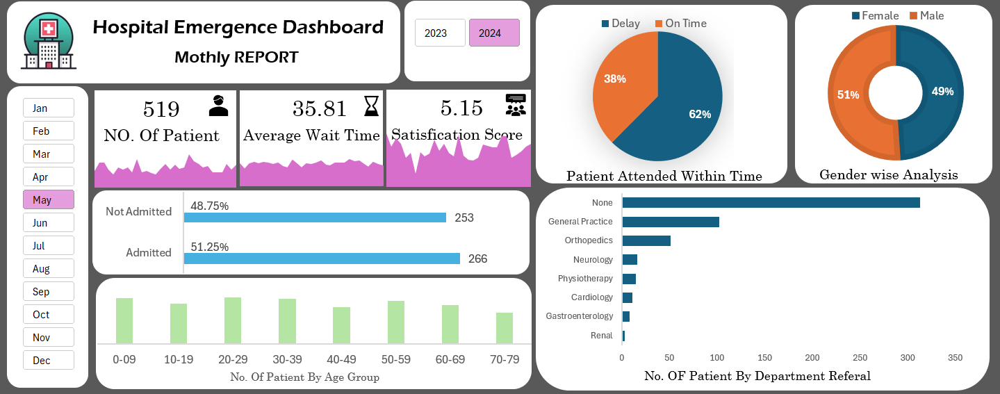

Emergency Dept Performance Insights
Project Overview
This report provides insights into key metrics of a hospital’s emergency room, helping administrators and medical staff optimize operations, reduce wait times, and improve patient satisfaction. The report leverages data from hospital records and presents it through interactive dashboards in Power BI/Excel.
Business Problems Addressed
- Identifying the most common causes of hospital visits.
- Monitoring patient wait times and optimizing resource allocation.
- Assessing patient satisfaction to enhance service quality.
- Improving overall efficiency in emergency room operations.
Data Sources
- Hospital Emergency.xlsx (Contains patient visit details, wait times, causes of visit, and satisfaction scores)
Why This Project? (A Real-World Perspective)
It was a cold winter night when Sarah rushed her father to the emergency department. He was struggling to breathe, his face pale, and his hands trembling. The waiting room was crowded—patients of all ages anxiously waiting for their turn. Sarah pleaded with the front desk, but the overwhelmed staff could only offer one response: "Please wait, we are doing our best."
Minutes felt like hours. Her father’s condition worsened, yet the doctors were still occupied with other critical patients. By the time he was seen, he required intensive care—something that could have been avoided with better patient flow management. Sarah’s experience is not unique. Thousands of families face similar struggles daily. Overcrowding, long wait times, and poor resource management in emergency departments can be a matter of life and death. This project aims to identify bottlenecks, optimize workflows, and ultimately save lives.
Project Goals
- Identify factors contributing to long wait times.
- Improve patient management strategies.
- Optimize hospital resources to enhance emergency care.
Key Insights
- Patient Volume: The dataset contains 1,001 patient records.
- Admissions: 58.5% of patients were admitted, while 41.5% were not.
- Wait Time: The average patient wait time is 34.93 minutes, highlighting potential service bottlenecks.
- On-Time Treatment: 41.7% of patients were attended to on time, while 58.3% experienced delays—suggesting room for operational improvements.
- Demographics: More female patients (53.5%) than male patients (46.3%).
- Age Group Trends: The 20-29 and 60-69 age groups had the highest number of emergency visits.
- Referral Gaps: Most patient records have "None" as the department referral, indicating possible data entry issues.
Key DAX Formulas
1. Average Wait Time
AvgWaitTime = AVERAGE('PatientData'[WaitTime])
Calculates the average time patients wait before receiving medical attention.
2. Total Patients Per Cause
TotalPatients = COUNT('PatientData'[PatientID])
Counts the total number of patients for each visit cause.
3. Patient Satisfaction Score
SatisfactionScore = AVERAGE('PatientData'[Satisfaction])
Computes the average satisfaction score of patients.
4. Percentage of Patients Waiting More Than 30 Minutes
%WaitOver30 =
VAR Over30 = COUNTROWS(FILTER('PatientData', 'PatientData'[WaitTime] > 30))
VAR Total = COUNTROWS('PatientData')
RETURN DIVIDE(Over30, Total, 0)
Calculates the percentage of patients who waited more than 30 minutes.
Dashboards Preview
Final Dashboard of Hospital Emergency Room
This dashboard provides a comprehensive overview of hospital emergency room operations, covering key metrics such as patient flow, wait times, and satisfaction scores. It helps hospital administrators and decision-makers assess performance and identify areas for improvement.
Key Insights
- Patient Flow – Tracks the number of incoming patients and their movement through different hospital departments.
- Wait Times – Monitors the average time patients wait before receiving medical attention.
- Patient Satisfaction Scores – Analyzes feedback to improve the patient experience.
- Hospital Performance – Provides a data-driven approach for optimizing resources and reducing bottlenecks.
With this dashboard, hospitals can enhance efficiency, reduce patient wait times, and improve overall service quality. 🚀

Daily Hospital Patient Causes
This dashboard highlights the most common reasons for hospital visits, providing valuable insights for hospital administrators and healthcare providers.
Key Insights
- Top Reasons for Visits – Identifies the most frequent medical conditions or emergencies leading to hospital admissions.
- Trend Analysis – Tracks daily fluctuations in patient visit causes to detect seasonal or recurring patterns.
- Resource Allocation – Helps hospital management optimize staff, equipment, and facilities based on patient needs.
- Emergency Readiness – Ensures hospitals are prepared for surges in specific conditions (e.g., flu season, injury spikes).
By leveraging this data, hospitals can improve operational efficiency and enhance patient care.

Patient Wait Time Analysis
This dashboard analyzes patient wait times based on various factors such as time of day, department, and patient volume. It helps healthcare administrators identify delays and optimize hospital workflow.
Key Insights
- Wait Time Breakdown – Tracks average patient wait times across different departments.
- Busiest Hours – Identifies peak periods when hospitals experience the highest congestion.
- Service Delivery Optimization – Helps reduce patient backlog by adjusting staff allocation.
- Performance Improvement – Enables real-time monitoring of wait times to enhance hospital efficiency.
By addressing patient wait time challenges, hospitals can improve patient satisfaction and streamline healthcare delivery.

Patient Satisfaction Score
This dashboard visualizes patient satisfaction levels, helping hospitals measure the quality of care and identify areas for improvement.
Key Insights
- Satisfaction Trends – Tracks patient feedback over time to monitor improvements or declines in service quality.
- Department Performance – Compares satisfaction scores across different hospital departments.
- Key Pain Points – Highlights factors leading to lower satisfaction (e.g., wait times, staff responsiveness).
- Actionable Insights – Helps hospitals implement targeted improvements to enhance patient experience.
By leveraging satisfaction data, hospitals can drive better patient experiences and improve overall service quality.
Tools & Techniques
- Microsoft Excel – Data Cleaning, Pivot Tables, Charts
- Power Query – Data Transformation
- Dashboard Creation – Interactive Excel visualizations
Dashboards and Their Impact
1. Daily Hospital Patient Causes Dashboard
Problem:
- Lack of visibility into the most common reasons for ER visits.
- Difficulty in predicting patient influx for specific illnesses or injuries.
- Identifies trends in patient admissions based on medical conditions.
- Helps allocate staff and medical resources according to high-frequency cases.
- Supports preventive healthcare planning to reduce ER visits.
2. Final Dashboard of Hospital Emergency Room
Problem:
- Inefficient patient flow management leading to bottlenecks.
- Overcrowding due to high patient volume and slow processing.
- Provides a real-time overview of ER performance and patient distribution.
- Optimizes hospital resource allocation (staffing, beds, and equipment).
- Assists in implementing process improvements for faster patient care.
3. Patient Wait Time Dashboard
Problem:
- Long wait times reducing patient satisfaction and increasing medical risks.
- Delays in triage, doctor availability, and bed assignment.
- Tracks average wait times for different stages of patient care.
- Identifies bottlenecks in the ER workflow and suggests process improvements.
- Supports better scheduling of medical staff to minimize delays.
4. Satisfaction Score Dashboard
Problem:
- Low patient satisfaction due to wait times, service quality, and communication gaps.
- Lack of real-time feedback mechanisms to address patient concerns.
- Measures patient satisfaction based on experience metrics.
- Provides insights into key areas for service improvement.
- Helps implement real-time patient feedback loops for immediate action.
Business Impact
- Optimized ER Operations – Faster patient processing reduces overcrowding.
- Improved Patient Experience – Shorter wait times and better communication increase satisfaction.
- Better Resource Allocation – Data-driven decisions improve staff and equipment utilization.
- Enhanced Decision-Making – Hospital management gains actionable insights for long-term improvements.
This analysis ensures that hospital administrators can make informed decisions to enhance emergency room efficiency and patient care quality.
Performance Optimizations
- Reduced unnecessary columns to minimize data model size.
- Used aggregations and summarization tables to speed up queries.
- Applied indexing and optimized relationships for faster filtering.
- Minimized calculated columns by preferring DAX measures for better performance.
Best Practices & Considerations
- Data Integrity: Ensured accuracy by cleaning and validating data.
- User-Friendly Visuals: Kept dashboards intuitive and easy to navigate.
- Performance Optimization: Used efficient DAX formulas and optimized data models.
- Regular Updates: Set up automated data refresh for real-time insights.
Future Improvements
- AI-driven predictive patient flow modeling.
- Real-time emergency room congestion monitoring.
- Integration with IoT devices for improved tracking.
Feedback & Contributions
We welcome feedback & contributions to enhance this project!